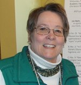

About HGI
The Human Gait Institute (“HGI”) was organized April 11, 2008. It is
a Colorado non-profit corporation. It has obtained exempt status
under Section 501(c)(3) of the federal Internal Revenue Code. Its
principal office is presently located in Wheat Ridge, Colorado.
Our Story
When the Human Gait Institute’s founder, Dr. Marny Eulberg, a polio
survivor, was faced with having to go into more extensive bracing,
she wanted a more effective brace than the industry standard braces
that are traditionally made of metal and plastic. After much
research, she became the wearer of the Dynamic Bracing Solutions
(DBS) orthosis. With her DBS, she experienced the increased
functionality it provided and a significant improvement in her life
style.
Thinking long-term, she recognized that the principles of the DBS
bracing system needed to endure for continued support to its users.
This was the original impetus for the establishment of HGI. At its
onset, HGI focused in four areas:
-
Assisting in training orthotists in the DBS technology
-
Supporting users and potential users in their use of the
technology
-
Assisting in and/or conducting research to establish the
effectiveness of the DBS and other advanced technologies as needed
-
Providing information on grant resources and grants to those who
need assistance in acquiring the brace.
Over time, and based on the awareness of the creation of other new
bracing technologies and the use of new materials, as well as
recognizing that one type of brace does not fit all, the Board of
HGI recognized that what they have learned about wearing a DBS brace
can be applied to in varying degrees of use to all brace wearers.
Therefore, they changed their mission and their focus to addressing
the issues that anyone who is considering getting a brace for the
first time or who is getting a new brace that is different from
their current brace could face.
Because of their own experiences and their observations of the
experiences of other brace wearers, HGI members have learned that
education and support for brace wearers is minimal at best. This is
not because there are not caring, aware orthotists in the
profession, but primarily because of the requirements of the medical
insurance system and, in some practices, the requirement to meet
product quotas to ensure that the practice is profitable. We hope
that what we provide on this web site can, in our limited way, help
to fill that void and provide support for those who need bracing to
improve and/or maintain their quality of life.
HGI exists through volunteers’ time, talents, and out of pocket
expense payments, and through some small training and research
grants and gifts. It is not affiliated with and operates independent
of Dynamic Bracing Solutions. All of the contents on this web site
are the product of our efforts and made available to the viewer free
of charge. It is copywritten, and should not be used for profit by
any entity.
Please help us by giving to the support of the continuation of this
web site. Any donations will be greatly appreciated and such
donations are tax deductible.
How to donate:
Our organization is small. Our expenses are minimal. We have no
personnel expenses as our work is the result of volunteers’ time and
talents. Our greatest cost is the continued maintenance of our web
site. For those of you who have benefitted from our work and would
like to support the continuation of our web site, you can give to us
by sending a check to:
Human Gait Institute
9461 West 37th
Place Wheat Ridge, CO 80033
HGI is also listed on
Amazon Smiles. So when you
purchase from Amazon and use the web site
smile.amazon.com you can
designate us as a recipient.
Any donations will be greatly appreciated and such donations are tax
deductible. Thank you!
Our Team
Jim Dean, a retired attorney, did not wear a leg brace until he
was in his 60s. Since then he has tried three different types of
braces including a conventional brace and two custom braces. His
results have varied, but the custom braces have provided more
assistance than the conventional brace.
Karla Stromberger, a retired pediatric physical therapist, went
into bracing as a mature adult. She has braces on both legs, one a
short leg brace (AFO) and one a long leg brace (KAFO). Her “best
braces” have allowed her to be physically active, hiking, walking
on the beach, and playing bocce ball.

Margaret Hinman, a retired educator, has been in and out of
bracing since she was 11 years old. After wearing a long-leg brace
(KAFO) for 5 years, she quit bracing for over twenty years, and
only went back to bracing when she hurt so bad she could not walk.
Her current “best brace” is over 10 years old and acquired after
trying almost every conventional and custom brace she could find
that did not work.
Dr. Marny Eulberg, M.D. of the Mountain and Plains Post-Polio
Clinic, wore a leg brace from ages 4 to 13 years old and had to go
back into bracing at age 39. She initiated her own search when she
learned that to best meet her needs, she would have to either go
into a long-leg (KAFO) conventional brace or find a custom
alternative that would meet her needs. After she initiated her
search and found her “best brace,” she founded HGI and brought
four others along to share their journeys.
Mike Mrozowicz has never walked without a leg brace. He has always
worn a custom brace, including trying an electronic exoskeleton
which did not meet his needs. He has been using his current “best
brace” for over 7 years.
Steve Medberry D.P.T., a practicing physical therapist, wears two
short leg braces (AFO’s) as a result of an autoimmune disorder
that he contracted in his late teens. He is still looking for his
“best braces.”